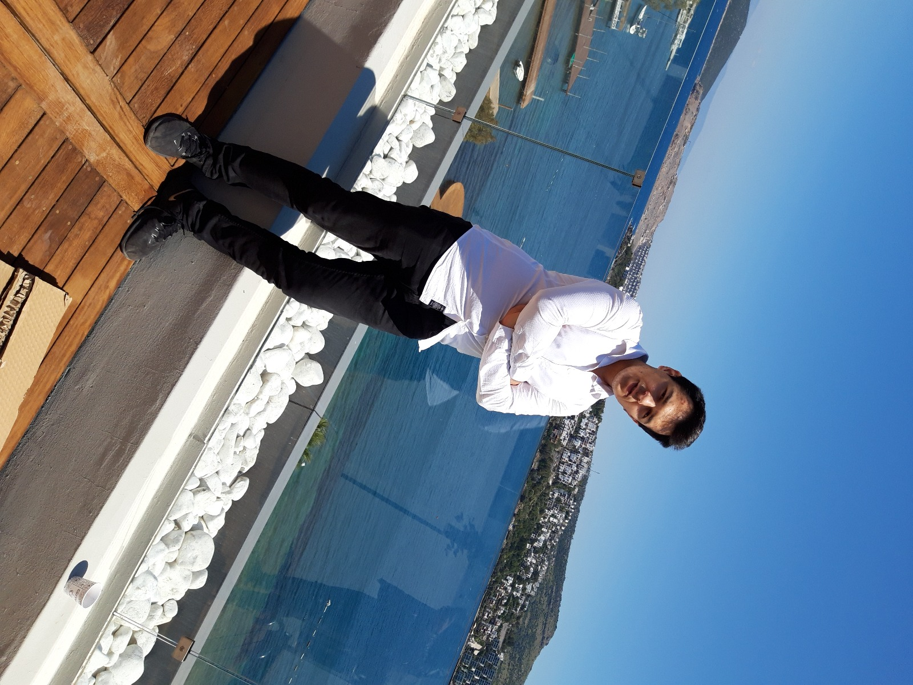

Ben Sami Çağlar Acar 2 ağustos 1999 yılında Eskişehir’de doğdum. Çocukluğumdan beri elektronik aletlere ve bilgisayarlara karşı bir ilgim var çünkü 3 yaşlarımdayken evdeki tüm elektronik aletlerin içlerini açıp bakıyormuşum. 7 yaşımda Kayseri’ye tayin olduk babamın işi dolayısıyla. Yaklaşık Kayseri’de 9 sene yaşadım. Eskişehir’e tekrar döndük. Lise eğitimim Kanatlı Anadolu lisesinde tamamladım. Şu an Sakarya Üniversitesi Bilgisayar Mühendisliği bölümünde okumaktan çok mutluyum.
